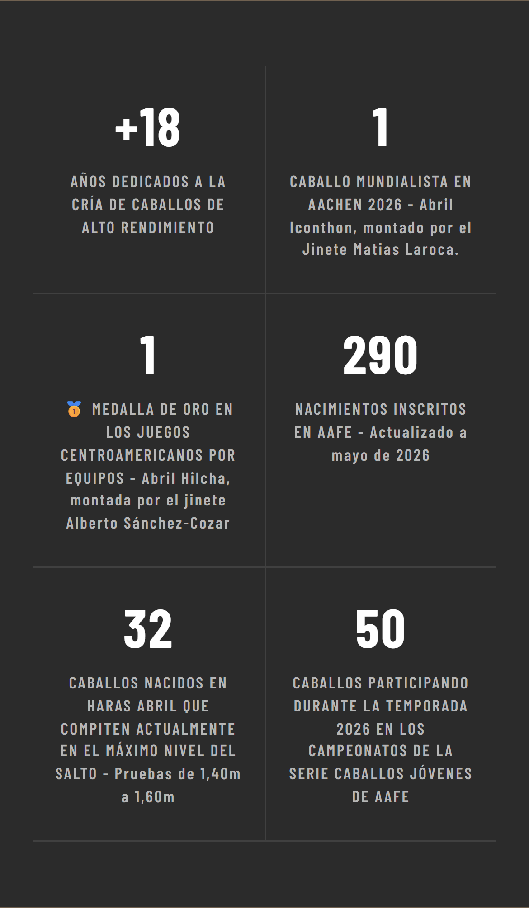
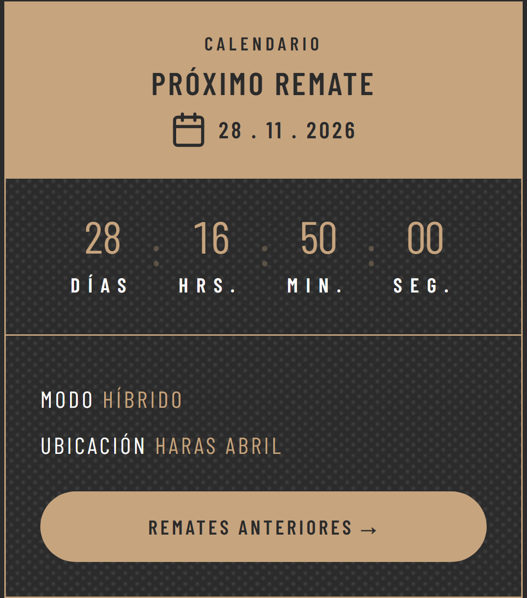
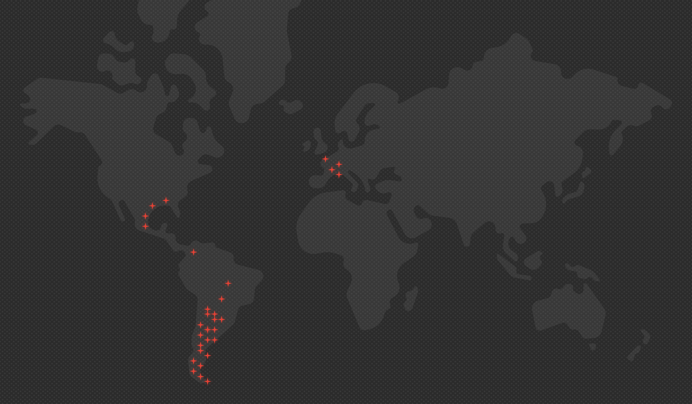

+18
+18
Años de cría
de alto rendimiento
de alto rendimiento


Aachen 2026
Aachen 2026
Abril Iconthon
caballo mundialista
caballo mundialista
Remate
Remate
28.11.2026

31
31
Caballos saltando
en distintos países
en distintos países
